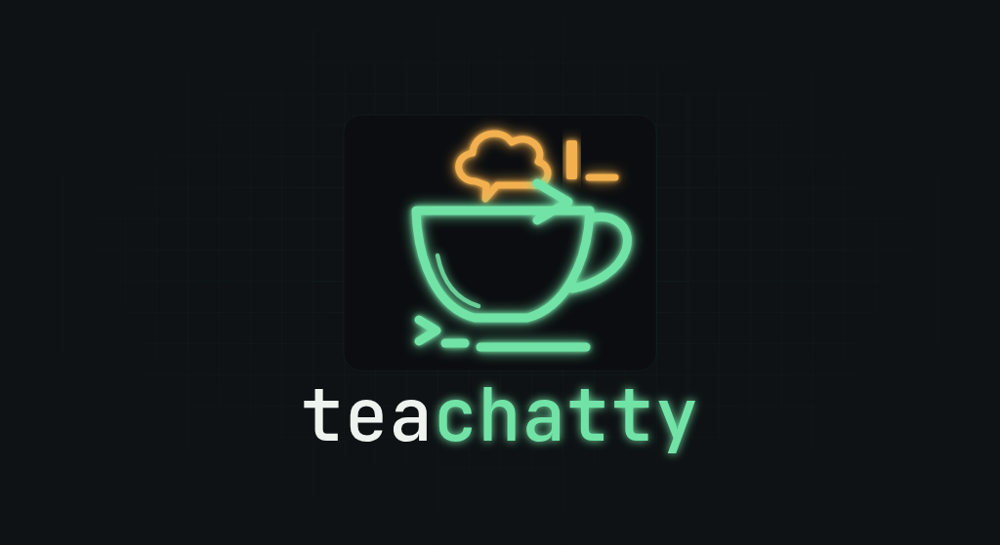

For devs and sysadmins. No heavy app, no browser, no noise: you join a room with one command, talk, and leave with Ctrl+C. It runs on your company's server, and messages never leave the network.
try it now: $ teachatty --server teachatty.com

Full screen, like vim or htop. Messages on top, your input box at the bottom.
┌───────────────────── dev · mateus ─────────────────────┐ │14:02 joao: anyone seen the disk alert on db-02? │ │14:03 daniel: yep, it's at 91%. cleaning old logs │ │14:05 mateus: thanks. did the 10am deploy go out? │ │14:05 daniel: @mateus it did, healthcheck is clean │ │ │ └────────────────────────────────────────────────────────┘ ╔════════════════════════════════════════════════════════╗ ║nice! closing the ticket█ ║ ╚════════════════════════════════════════════════════════╝
@you: the message lights up in amber and your terminal beeps, even from another tab.teachatty and you're in local. For another room, --room: if it doesn't exist, it's created.Work chat turned into heavy apps with notifications, threads, emoji and a thousand channels. teachatty is the opposite: a small command-line tool you use like any other.
Nobody types ws://...?room=x. It's teachatty --room dev --alias daniel, and the rest is an internal detail.
One server binary on an internal machine, on the port and interface you choose (--addr). Traffic never leaves the company network, and it's encrypted with TLS by default, with no certificates to manage.
make 2>&1 | teachatty --room ops sends the build output to the team's room (lines arriving together go as one message), shows it in your terminal and exits at the end. Safe in scripts and cron.
A feature only goes in if it pays for itself. The whole codebase is about 1,250 lines, comments included, standing on libraries that do the heavy lifting.
Measured, not estimated. The server keeps everything in memory and each connection costs little.
Daniel and Mateus are in room dev. João is in geral. Daniel types hi and presses Enter. Step through it, or press play. The arrow keys work too.
Each step is explained in detail in the documentation.
The terminal is in raw mode: the kernel neither holds nor echoes anything, each key goes straight to the program. tcell reads the bytes from stdin and turns them into events. The "h" and the "i" are already in the input box. When Enter arrives, SetInputCapture grabs the key before the box sees it.
Requires Go 1.27 or newer. The fastest way in is the public server at teachatty.com:
go install github.com/daniel-cmdline/teachat/cmd/teachatty@latest teachatty --server teachatty.com
Or run your own, from a clone:
git clone https://github.com/daniel-cmdline/teachat.git cd teachat # the server (port 7347, default room local) go run ./cmd/teachatty-server # in another terminal: no flags, you land in the local room go run ./cmd/teachatty # send a command's output to the room uptime | go run ./cmd/teachatty
Flags, keys, another machine on the network and how to build the binaries: in the documentation.
teachatty is just getting started and grows one feature at a time.
A git tag and prebuilt binaries for Linux and macOS (amd64 and arm64), plus .deb and .rpm packages, so nobody needs Go installed.
A server-wide token or password-protected rooms, decided after the release. TLS is in place, so a secret travels encrypted; the server stores only a salted hash.
Pure-Go SQLite. Whoever joins sees what was already said, and pipe mode keeps logs.